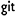

About
 Lenciel于2006年从老和山职业技术学院毕业，成为一名程序员。先后在在做基站最好的公司做过基站，做存储最好的公司做过存储。之后为长期垄断偶像派的临幸，并最终将此女据为己有，回到成都扎根。对物质生活悟性一般，勉强能分清鲍鱼和鲤鱼，但对各种精巧的电子产品缺乏足够的抵抗能力。自以为是个好老公，但据说也就敏捷属性比较高，智力和力量都是废柴。
Lenciel于2006年从老和山职业技术学院毕业，成为一名程序员。先后在在做基站最好的公司做过基站，做存储最好的公司做过存储。之后为长期垄断偶像派的临幸，并最终将此女据为己有，回到成都扎根。对物质生活悟性一般，勉强能分清鲍鱼和鲤鱼，但对各种精巧的电子产品缺乏足够的抵抗能力。自以为是个好老公，但据说也就敏捷属性比较高，智力和力量都是废柴。
Lenciel最大的爱好是足球，从中学到研究生毕业都是校队队员，打过几届飞利浦，运气好的两次还打到全国赛见识了一下贵圈有多乱。虽然生活在天朝，这项爱好显得不那么讲究，但目前仍每周参与，不离不弃。除此之外，Lenciel爱读书，爱看片，爱喝茶，爱睡觉。
Lenciel的人生信条是“既往不恋，当下不杂，未来不迎”，简单的说就是懒。当年听好朋友们反复教诲古典音乐好听极了，Lenciel心里却想，他娘的14岁之前都没有听过钢琴声，就别蒙自己了，于是至今只会欣赏王菲和陈奕迅。即便是在成家之后，也从不花时间研究股票、楼市，从不认真学习各界精英辛苦编撰慷慨分享的成功学。因此，在可以预见的未来，都很难成为一名成功人士。如果即便如此您仍然需要联系他，可以试试时下最火的新浪微博。不过真正能保证快速响应的，是写信给他的gmail邮箱 lenciel@gmail.com。
LinkedIn Sina Twitter  GitHub Google+ Flickr